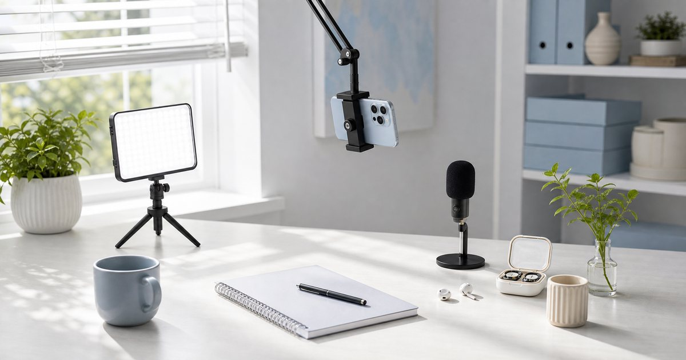

Elite Fashion｜不想露臉也能做內容：手機拍攝支架、濾鏡、燈光與收音入門
不露臉內容需要穩定畫面、清楚聲音與可重複的拍攝流程。從支架、補光、收音到濾鏡，整理入門創作者裝備順序。

不露臉內容的核心，是穩定畫面與清楚聲音
不想露臉也能做內容，但不能只靠剪輯補救。真正需要先整理的不是商品名稱，而是你每天會在哪一個動作卡住：開會、比對資料、拍攝、簡報、移動，或收納。把卡住的位置說清楚，設備選擇才不會變成看到規格就心動。
GoRig、Haida、DTAudio、燈后、SANSUI 山水與 Momax 可以放在這個情境裡比較，但角色要分清楚。編輯部會先看它們各自負責的任務：主機、螢幕、充電、聲音、拍攝、保護或收納，而不是把所有 3C 周邊混成一張清單。
先把畫面穩定、聲音清楚、主體乾淨，再追求風格。常見錯誤是畫面一直晃、聲音忽大忽小，卻以為加濾鏡就能補救；在台灣常見的小宅書桌、共享辦公室、咖啡店與客戶會議場景裡，桌面教學、手作示範和產品細節都需要固定角度與基本收音，這些細節往往比買到更高一階規格更影響使用感。
- 先確認每天使用頻率，再決定預算順序。
- 先排除會造成麻煩的動線，再補功能型配件。
手機支架先看拍攝角度，而不是承重數字
俯拍、斜拍和手持拍攝需要不同支架。真正需要先整理的不是商品名稱，而是你每天會在哪一個動作卡住：開會、比對資料、拍攝、簡報、移動，或收納。把卡住的位置說清楚，設備選擇才不會變成看到規格就心動。
GoRig 的行動攝錄影配件可以從角度需求開始比較 可以放在這個情境裡比較，但角色要分清楚。編輯部會先看它們各自負責的任務：主機、螢幕、充電、聲音、拍攝、保護或收納，而不是把所有 3C 周邊混成一張清單。
先決定主要拍桌面、手部、產品還是戶外。常見錯誤是支架買太大，結果每次架設都很慢；在台灣常見的小宅書桌、共享辦公室、咖啡店與客戶會議場景裡，固定角度能讓系列內容更一致，也讓補拍更省力，這些細節往往比買到更高一階規格更影響使用感。
- 先確認每天使用頻率，再決定預算順序。
- 先排除會造成麻煩的動線，再補功能型配件。
濾鏡的作用是控制畫面，不是替內容加特效
CPL 和黑柔要先對應反光、天空或柔和感等具體問題。真正需要先整理的不是商品名稱，而是你每天會在哪一個動作卡住：開會、比對資料、拍攝、簡報、移動，或收納。把卡住的位置說清楚，設備選擇才不會變成看到規格就心動。
Haida 濾鏡適合放在影像質感的第三步 可以放在這個情境裡比較，但角色要分清楚。編輯部會先看它們各自負責的任務：主機、螢幕、充電、聲音、拍攝、保護或收納，而不是把所有 3C 周邊混成一張清單。
先清潔鏡頭、固定光線，再比較濾鏡差異。常見錯誤是構圖和光線還沒整理，就急著追求電影感；在台灣常見的小宅書桌、共享辦公室、咖啡店與客戶會議場景裡，咖啡店、桌面與夜間光點可以少量使用風格濾鏡，這些細節往往比買到更高一階規格更影響使用感。
- 先確認每天使用頻率，再決定預算順序。
- 先排除會造成麻煩的動線，再補功能型配件。
燈光要讓主體清楚，不要只追求氛圍
不露臉內容最怕手部和物件看不清楚。真正需要先整理的不是商品名稱，而是你每天會在哪一個動作卡住：開會、比對資料、拍攝、簡報、移動，或收納。把卡住的位置說清楚，設備選擇才不會變成看到規格就心動。
燈后可以作為桌面燈和補光選項，SANSUI 山水則放在影音補充 可以放在這個情境裡比較，但角色要分清楚。編輯部會先看它們各自負責的任務：主機、螢幕、充電、聲音、拍攝、保護或收納，而不是把所有 3C 周邊混成一張清單。
把主光和補光分開，避免手影遮住主體。常見錯誤是只用氣氛燈，導致畫面漂亮但資訊不足；在台灣常見的小宅書桌、共享辦公室、咖啡店與客戶會議場景裡，晚上拍攝時，簡單可重複的補光比複雜燈陣更實用，這些細節往往比買到更高一階規格更影響使用感。
- 先確認每天使用頻率，再決定預算順序。
- 先排除會造成麻煩的動線，再補功能型配件。
聲音品質會決定內容能不能被看完
觀眾不一定要求完美畫質，但很難忍受混亂聲音。真正需要先整理的不是商品名稱，而是你每天會在哪一個動作卡住：開會、比對資料、拍攝、簡報、移動，或收納。把卡住的位置說清楚，設備選擇才不會變成看到規格就心動。
DTAudio 可放在耳機、喇叭與音訊周邊比較 可以放在這個情境裡比較，但角色要分清楚。編輯部會先看它們各自負責的任務：主機、螢幕、充電、聲音、拍攝、保護或收納，而不是把所有 3C 周邊混成一張清單。
先縮短收音距離、降低環境噪音，再補設備。常見錯誤是把預算全放在畫面，卻讓講解聲太遠；在台灣常見的小宅書桌、共享辦公室、咖啡店與客戶會議場景裡，小房間和硬牆面容易有回音，試錄比直接下單更可靠，這些細節往往比買到更高一階規格更影響使用感。
- 先確認每天使用頻率，再決定預算順序。
- 先排除會造成麻煩的動線，再補功能型配件。
最穩的入門組合：支架、補光、收音，再加濾鏡
創作流程越短，越容易持續。真正需要先整理的不是商品名稱，而是你每天會在哪一個動作卡住：開會、比對資料、拍攝、簡報、移動，或收納。把卡住的位置說清楚，設備選擇才不會變成看到規格就心動。
GoRig、DTAudio 和 Haida 可以分別處理穩定、聲音與影像風格 可以放在這個情境裡比較，但角色要分清楚。編輯部會先看它們各自負責的任務：主機、螢幕、充電、聲音、拍攝、保護或收納，而不是把所有 3C 周邊混成一張清單。
先建立十分鐘內能架好的配置。常見錯誤是買了太多設備，每次拍攝前都要重新整理；在台灣常見的小宅書桌、共享辦公室、咖啡店與客戶會議場景裡，把支架、燈、耳機、濾鏡和擦拭布放在同一盒，能降低開拍摩擦，這些細節往往比買到更高一階規格更影響使用感。
- 先確認每天使用頻率，再決定預算順序。
- 先排除會造成麻煩的動線，再補功能型配件。
FAQ
這類設備需要一次買齊嗎？
不建議。先找出目前流程中最常卡住的地方，再補一到兩件會每天使用的配件。一次買齊容易買到重複或不適合自己動線的設備。
商品規格應該怎麼比較？
先確認自己的使用情境，再看尺寸、重量、連接方式、供電、收納與保固。不要只看單一規格或宣傳字眼，仍應以商品頁標示為準。
如果預算有限，應該先買哪一類？
先買能降低日常摩擦的項目，例如穩定支架、必要充電、清楚收音或資料備份。美化型或偶爾使用的周邊可以放到第二輪。
下一步建議
如果你想把工作與創作流程整理得更穩，可以先挑最常卡住的一段動線開始補配件。
重要警語
本文為一般 3C 周邊、工作設備與創作者配件選購情境整理，不構成效能測試、成果保證、設備相容性或維修承諾。規格、保固、價格、活動與庫存請以商品頁公告為準。
本文含品牌／商品導購連結；若你透過部分商品連結前往選購，Elite Fashion 可能取得合作收益。本文仍以編輯判斷與使用情境整理為主，價格、規格、活動與庫存請以商品頁公告為準。